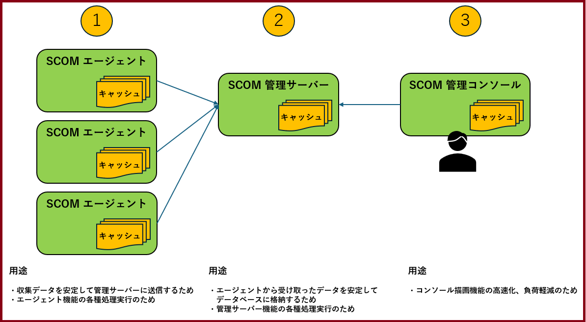

皆様こんにちは、System Center サポートチームの 石原 です。
今回は、System Center Operations Manager (SCOM) が保持する各種のキャッシュデータを必要に応じてクリアする手順についてご紹介いたします。
SCOM が保持するキャッシュについて
SCOM は、各コンポーネントの基本的な動作、コンポーネント間のデータの安定的な引き渡し、場合により高速処理のためにキャッシュを保持します。
キャッシュは、以下のコンポーネントに存在します。
① SCOM エージェント ：キャッシュクリア手順
② SCOM 管理サーバー ：キャッシュクリア手順
③ SCOM 管理コンソール ：キャッシュクリア手順
サーバーのメンテナンス作業等で OS 再起動を繰り返した後や、SCOM 管理サーバーと断続的な通信断が発生した後などに、稀にキャッシュ データに不整合が発生することがあります。
① や ② のキャッシュに不整合が発生すると、起動中のサーバーが SCOM では管理不可と表示されたり、監視設定の通りにエージェントが動作しないことがあります。
③ のキャッシュに不整合が発生すると、削除したアラートが残存して表示されたり、ビューの情報が適切に更新されないことがあります。
そのような場合、キャッシュをクリアすることで事象を解消することができます。
以降の章にキャッシュクリアの手順を記載しましたので、相当する事象が発生した際にはキャッシュクリアを実施ください。
ご参考：キャッシュをクリアする方法とタイミング | Microsoft Learn
【SCOM のキャッシュの概要図】

① SCOM エージェントのキャッシュクリア手順
【手順】
1. SCOM エージェントサーバーにコンピューターの管理者権限を持つユーザーでログオンします。
2. “Microsoft Monitoring Agent” サービスを停止します。
手順：タスクマネージャーを開き、[サービス] タブより [名前] が [HealthService] の行を右クリックし、[停止] をクリックします。
3. 以下のフォルダを開きます。
C:\Program Files\Microsoft Monitoring Agent\Agent\Health Service State
(※) SCOM エージェントのインストール先を変更している場合には、適切なフォルダを開いてください。
4. フォルダ内のすべてのファイルとフォルダを削除します。
5. 停止していた “Microsoft Monitoring Agent” サービスを再起動します。
手順：タスクマネージャーを開き、[サービス] タブより [名前] が [HealthService] の行を右クリックし、[開始] をクリックします。
【作業影響】
・サービスを止めている間、SCOM エージェントの監視機能（性能情報収集、SCOM 管理サーバーへのデータ送信など）は動作しません。
・3. の手順で削除したフォルダは、5. の手順実施後に再生成されます。
② SCOM 管理サーバーのキャッシュクリア手順
【手順】
1. SCOM 管理サーバーに、管理者権限のあるユーザーでログインします。
2. 下記のサービスを、この順序で停止します。
2-1. Microsoft Monitoring Agent
2-2. System Center Management Configuration (※1)
2-3. System Center Data Access Service
3. 以下のフォルダを開きます。
C:\Program Files\Microsoft System Center\Operations Manager\Server\Health Service State
(※) SCOM のインストール先を変更している場合には、適切なフォルダを開いてください。
4. フォルダ内のすべてのファイルとフォルダを削除します。
5. 下記のサービスを、この順序で開始します。
5-1. System Center Data Access Service
5-2. System Center Management Configuration (※1)
5-3. Microsoft Monitoring Agent
※1 日本語環境の SCOM 2022 では、サービス名は “System Center 管理構成” と表記されます。
【作業影響】
・サービスを止めている間、SCOM 管理サーバーの監視機能（アラート発砲やメール通知、SCOM コンソールの利用など）は動作しません。
・SCOM エージェントが収集している情報は、サービス起動後にSCOM 管理サーバーに連携されます。
・「Health Service State」フォルダにキャッシュされている一時情報を削除するため、エージェントから連携されたパフォーマンスデータなどが 1 回分程度 欠損する可能性がございます。
・3. の手順で削除したフォルダは、5-3. の手順実施後に再生成されます。
③ SCOM 管理コンソールのキャッシュクリア手順
【手順】
1. SCOM コンソールを閉じます。
2. 管理者権限にてコマンドプロンプトを実行し、以下のコマンドにてキャッシュクリアを実行します。
1 | cd "C:\Program Files\Microsoft System Center\Operations Manager\Console" |
※ SCOM のインストール先を変更している場合は、cd で移動するパスを変更して実施して下さい。
3. 上記コマンド実行後、コンソールが開きますので、あらためてログインします。
【作業影響】
特に無し。
●よくあるお問い合わせ (作業影響について)
Q
SCOM 管理サーバーのキャッシュの内容は、SCOM エージェントで取得した監視のためのデータ（パフォーマンスデータのような）でしょうか？または、アラート、警告といった２次的な情報でしょうか？
A
キャッシュには、フォーマンスデータと、アラートの条件となる状態の情報の両方のデータが含まれます。
なお、状態の情報については、キャッシュクリア時点で発生していた状態がキャッシュクリア後のサービス起動後も続いていた場合、その時点であらためてアラート、警告の状態を判定する処理が動作いたします。
Q
SCOM エージェントのキャッシュクリアをすると、キャッシュに残っていた未送信の情報が削除されると思いますが、強制的に SCOM 管理サーバーへデータを送信することは可能でしょうか？
A.
強制的に SCOM 管理サーバーへデータを送信する方法はございません。
基本的には SCOM エージェントが収集したデータは、常にすぐにSCOM 管理サーバーへ送信されています。
Q
キャッシュクリアにより削除される情報の時間（期間）を確認する方法はありますでしょうか？
A
キャッシュクリアにより削除される情報の時間（期間）を確認する方法はございません。
以下のようにご認識いただければと存じます。
・アラートの条件となる状態の情報については起動後にあらためて判定される。
・基本的にはエージェントが収集したパフォーマンスデータなどデータは常にサーバー側へ送信されているため、削除されない。
(※ 削除されても取得頻度の 1 回分程度)
Q
「SCOMエージェントが収集したデータ」が SCOM 管理サーバに送信されずに残っているかどうかを確認する方法はありますでしょうか？
A
未送信情報の有無について確認する方法はございません。
SCOM エージェントおよび SCOM 管理サーバーのキャッシュの仕様詳細
既定では、SCOM 管理サーバーは 100MB、SCOM エージェントは 15MB 分の監視データを、一時キャッシュとして保存することが可能です。
SCOM エージェントのキャッシュデータは、対象サーバーが SCOM 管理サーバーとの疎通を行えない場合に、管理サーバーに送付する予定の監視データを一時的に保存するものです。その後、SCOM 管理サーバーと対象サーバー間の通信が回復した際、キャッシュに保管した監視データが一斉に SCOM 管理サーバーに送付されるものとなります。
つまり、通信が行えない間も監視データは絶えず収集され、通信が回復した際はその間の監視データをご利用いただくことが可能となります。また、キャッシュにある程度の余裕があることが重要であることを意味します。
確保されているキャッシュ容量 (既定で 15MB) に対する現在のキャッシュ使用量の割合は、”Health Service Management Groups\Send Queue % Used” パフォーマンス カウンターにて確認できます。このパフォーマンス カウンターは、SCOM 管理グループ毎にインスタンスが作成されますので、適切なインスタンスのパフォーマンス カウンターを確認してください。
キャッシュ容量の使用量は、監視対象のサーバーの動作状況によって変化します。お客様の監視ワークフロー量等の要因によっても使用量が増減します。そのため、一概に経過時間に対するキャッシュ使用量を見積もることは困難です。
ただし、参考情報として、弊社の検証環境でいくつかのサーバーのキャッシュ消費量を計測した中で、最もキャッシュ消費量が多かったサーバー (SQL Server が動作するサーバー) において、半日で約 12 MB 程を使用したという測定結果があります。
キャッシュ使用量が多い環境においても既定の 15MB の範囲に収まっていますので、一般的なサーバーにおいて SCOM 管理サーバーと短時間の通信断が発生した場合は、以下の状況となり、データ欠損が無いことが期待されます。
・通信が途絶する際は、リアルタイムの監視が行えなくなる。
・通信が回復した瞬間に、キャッシュに保存された監視データが SCOM 管理サーバーに送付され、そのデータを使用することが可能となる。
キャッシュサイズの増加手順について
キャッシュに保存されたデータが指定容量を超えた場合、古い監視データから順番にキャッシュから消去されます。
データの欠損を防ぐためにキャッシュのサイズを増加する場合、下記の手順を行います。
- SCOM エージェントがインストールされている監視対象のサーバーに、管理者権限を持つアカウントでログインします。
- Win + R キーを押下し、”ファイル名を指定して実行” ウィンドウを出力します。”regedit” と入力し、”OK” ボタンを押下します。
- レジストリ エディタ” ウィンドウが開きますので、以下のレジストリを参照します。
“HKEY_LOCAL_MACHINE\SYSTEM\CurrentControlSet\Services\HealthService\Parameters\Management Groups<SCOM 管理グループ名>\maximumQueueSizeKb” - レジストリをダブルクリックします。”表記” から “10 進数” を選択し、任意の数値を KB 単位で指定します。
※本情報の内容（添付文書、リンク先などを含む）は、作成日時点でのものであり、予告なく変更される場合があります。